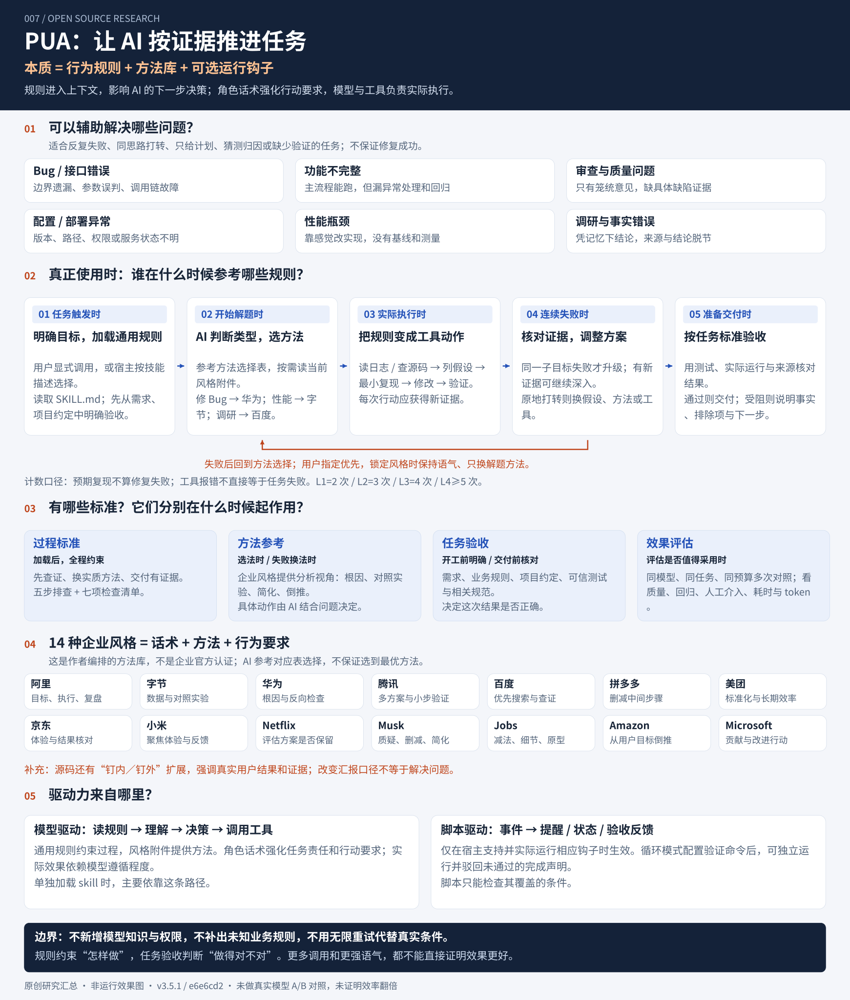

{kind=link}
{kind=link}
A
它要求怎样工作 · 来自技能规则
过程标准：查证、换方法、验证交付
先找证据再归因，避免在同一假设上反复微调；宣布完成前给出运行结果。失败升级按同一子目标的实际失败实验计算。
“失败 2 次进入 L1，3 次进入 L2……”是作者设计的工作流阈值，不是通用行业标准，也不代表最佳重试次数。
它用 Skill 规则推动 AI 从不同角度持续排查：按问题选择方法，用证据判断，失败后调整策略，达到验收后交付。
作者整理的十几种企业风格提供方法参考；真正执行仍依靠模型和现有工具。
PUA 的核心价值是约束 AI 的工作过程：根据证据选择和调整方法，把任务推进到可验证的结果。它适用于多种任务中的排查与交付问题，并不保证增加重试次数就能修好。
按问题选方法 → 用工具获取证据 → 验证结果 → 失败时调整策略 → 达标交付或有据交接。方法库回答“怎样尝试”，任务验收回答“结果是否正确”；Skill 规定何时查证、换法、验证和停止。

技能被调用后，AI 参考作者写好的任务映射表、当前上下文和失败模式作选择。这里的“自动”是模型遵循文本规则进行判断；它没有保证每次选择都最优。方法附件按当前需要读取，不是每次把所有风格轮流用一遍。
手动指定优先于自动路由。锁定的是旁白风格；失败后仍可切换实质方法与升级要求。用户选择“自动”后可恢复自动路由。
Skill 定义的是失败后的策略调整：检查当前方法是否执行充分，保留已验证事实和已排除路径，再重设假设或下一步实验。它不是清空上下文或重置模型，也不会凭空增加知识与权限。有新证据的探索可以继续；原地打转时才要实质换思路，不能只换风格名称。
同一子目标下，实际执行的修复方案未通过验收，才计入失败；初始复现、重复观察不能直接累计。工具报错也不必然等于任务失败。压力等级为 0–1 次 L0、2 次 L1、3 次 L2、4 次 L3、5 次及以上 L4。等级升级与方法切换需要分别判断。
这些是作者整理的角色话术与方法组合，不是企业官方标准。表中是方法侧重点的中文概括，实际执行仍受共同的证据、验证和退出规则约束。
| 风格 | 方法侧重点 | 怎样转成行动（解释性示例） |
|---|---|---|
| 阿里 | 目标、过程、结果、复盘 | 明确交付项，跟进执行，最后核对实际结果 |
| 字节 | 数据驱动、A/B 比较 | 同条件测量方案前后指标，避免凭感觉判断 |
| 华为 | 根因分析、5-Why、反向自检 | 追查原因链，再找能推翻当前结论的反例 |
| 腾讯 | 多方案比较、最小可行验证、渐进发布 | 用小范围实验比较不同解法 |
| 百度 | 信息检索先于判断 | 查原始文档与报错来源，再形成结论 |
| 拼多多 | 成本控制、减少中间环节 | 检查并删减没有实际价值的处理步骤 |
| 美团 | 标准化拆解、效率与长期维护 | 拆清步骤和责任，让重复工作可核对、可复用 |
| 京东 | 用户体验与实际结果 | 沿用户实际操作链路检查是否交付可用结果 |
| 小米 | 聚焦体验、用户反馈 | 聚焦关键体验，依据反馈修正细节 |
| Netflix | 检验方案是否值得保留、直接反馈 | 评估组件或方案价值，替换不合适的实现 |
| Musk | 质疑 → 删除 → 简化 → 加速 → 自动化 | 先核对需求与必要性，再优化执行 |
| Jobs | 减法、细节、原型、明确责任 | 削减复杂度，用可检查的原型验证体验 |
| Amazon | 从用户结果倒推、深入证据 | 从期望结果反推需求、约束与方案 |
| Microsoft | 贡献、影响与改进行动 | 复盘失败后明确下一步具体改变什么 |
为什么源码还出现“钉内／钉外”？README 提到 14 种企业风格，但本次固定版本的方法库还包含这一额外风格，用于区分汇报好看与真实完成，要求回到用户结果和证据链。两处数量口径并不完全一致。
| 参考哪类标准 | 什么时候参考 | 用来决定什么 |
|---|---|---|
| 过程规则 | 技能加载后贯穿执行，卡住时重点自检 | 有没有查证、换假设、验证与闭环 |
| 方法库／企业风格 | 任务开始选起点，连续失败时重新评估 | 下一步用什么解题思路 |
| 任务验收 | 动手前明确；实验后与交付前核对 | 修复是否正确、需求是否完成 |
| 效果评估 | 决定是否采用该技能、是否值得继续使用时 | 质量收益能否抵消耗时和 token 成本 |
先找证据再归因，避免在同一假设上反复微调；宣布完成前给出运行结果。失败升级按同一子目标的实际失败实验计算。
“失败 2 次进入 L1，3 次进入 L2……”是作者设计的工作流阈值，不是通用行业标准，也不代表最佳重试次数。
例如追问原因链（RCA / 5-Why）、用最小样例复现、尝试相反假设、找方案最可能失败的边界、比较改动前后的指标。
不同“大厂风味”把方法与角色话术组合在一起。这些是仓库作者的编排，不应理解为相应公司的官方认证或完整工程规范。
你要的行为、已有接口约定、业务规则和相关规范决定结果对错；测试把这些要求变成可执行检查。模型可以协助细化标准，但不能为了让结果通过而擅自降低标准。
标准不明确时，先从现有材料推导；会实质改变交付的歧义需要确认。
固定模型、任务、环境与预算，对照有／无技能，多次运行；比较正确完成率、回归问题、人工介入、耗时与 token 成本。
更多工具调用、更长回答、更强语气都不能直接算提升。当前公开材料不足以证明“效率翻倍”，本项目也未做真实模型 A/B 对照。
核心技能给出五步：回顾尝试模式 → 收集原始证据并反转假设 → 检查重复行为 → 执行有验收条件的新方案 → 复盘及检查同类问题。
进入 L3 后还要求核对七项：
工具不可用就说明事实和替代路径。达到全部约定验收后停止；无法推进时提供已查事实、排除项与剩余阻塞。
用户目标、源码、报错、之前尝试过的方法。
显式调用，或由宿主根据技能描述选择；完整插件还可通过事件提醒。
模型选择下一步，使用已有搜索、文件、终端等工具验证假设。
没通过就调整方案；通过约定验收后交付，真实阻塞则说明依据。
它在模型决定“下一步做什么”时增加明确约束，例如要求先读日志、列不同假设、拿测试结果再下结论。这是对实现机制的解释；它没有训练新模型，也没有证明情绪话术本身能稳定提高正确率。
角色、排查步骤、失败升级和交付要求作为指令被读取。是否实际执行，取决于模型理解和遵循程度。
“自动路由”通常是让模型根据任务类型选择文本中的方法表，不是另一个经过训练的故障诊断模型。
完整插件可匹配用户措辞、记录工具失败、保存有限状态。启用循环并配置验证命令后，脚本可以驳回未通过的完成声明。
只有宿主支持并实际运行相应钩子，这部分自动化才存在；单独安装一个技能文件不包含全部运行能力。
| 动作 | 由什么完成 | 判断边界 |
|---|---|---|
| 匹配“又错了、换个方法”等措辞 | 触发脚本中的正则表达式 | 命中关键词不等于真正理解任务 |
| 记录工具失败、去重、隔离会话 | Python 状态组件 | 工具失败只是观察，不能直接当作一次修复失败 |
| 判断根因、选择新方案 | 模型结合规则、工具结果推理 | 提示词不能保证判断正确 |
| 检查某个验证命令是否通过 | 循环钩子运行命令并检查退出状态 | 只覆盖命令实际检查的内容，不自动理解全部业务 |
更有针对性的触发信号是：多次失败、反复用同一方法、没查证就归因、只给计划不执行，或没有证据就说完成。核心技能描述明确排除了平静的首次普通请求；不必为了简单任务强行增加流程。
| 场景 | 具体卡点 | PUA 推动的动作 | 真正的验收依据 |
|---|---|---|---|
| 修 Bug / 接口联调 | 反复改参数，问题仍存在 | 查日志和调用链、做最小复现、换根因假设 | 原问题不再复现，相关回归通过 |
| 功能开发 | 只写主体代码，漏异常和交付检查 | 拆验收项，完成边界处理并运行构建测试 | 约定的用户流程、输入输出和边界行为 |
| 代码审查 | 只给笼统意见，没有可核对的问题 | 检查调用上下文、反例与影响范围 | 明确的位置、触发条件和缺陷证据 |
| 配置 / 部署排障 | 猜“环境问题”，修改后未检查运行结果 | 核对版本、路径、权限和服务日志，检查健康状态 | 目标环境中实际可访问、响应正确 |
| 性能优化 | 凭感觉改实现，不测量瓶颈 | 建立基线，定位瓶颈，做同条件前后比较 | 目标指标达标，功能保持正确，资源成本可接受 |
| 资料调研 | 凭记忆总结，来源和结论脱节 | 检索原始资料、交叉核对、标注证据缺口 | 结论有直接来源，时效性与不确定性说明清楚 |
缺少必须的账号权限、私有信息、业务决策，或外部服务不可用；这些需要补齐真实条件。纯审美偏好和没有评价目标的开放创作，也需要先确定方向。技能不能扩大权限、补出未知事实，或用无限重试替代用户决策。
场景来自上游方法选择表与运行契约；表中具体卡点和验收例子是本项目的解释性整理，非已测效果承诺。
它指的是我们编写的两条教学路径，处理同一份错误代码、使用相同的测试条件。选择下面的示例只是阅读预设过程，页面不会调用真实 AI。
把 > 改为 ≥，再改结束条件、去掉空格。仍然比较日期字符串，因此没有解决不同时区写法导致的问题。
发现跨时区样例失败 → 将字符串转换为时间戳 → 再修正端点 → 运行全部约定样例确认结果。
未使用 PUA 的模型也可能自主选择正确方法；使用 PUA 也不保证一定走对。
固定研究提交 e6e6cd237ad17750d179674bff52f8184abea8fd · v3.5.1。原理和规则来自源码；场景中的具体例子由本项目整理。
已做 阅读核心技能与钩子；验证上游状态组件的 12 项行为；运行三个 Bug 的六条教学路径。
未做 真实模型有／无技能对比；完整插件安装与完整循环钩子实验；证明“PUA 话术使模型更聪明”。